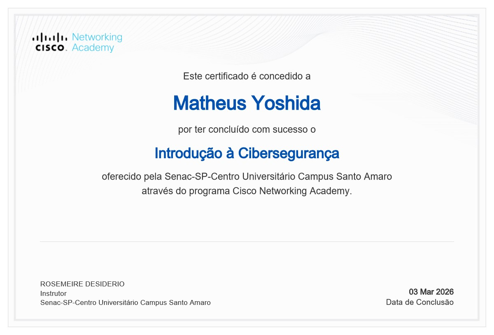

Disponível para oportunidades · São Paulo/SP
Olá, sou Matheus.
Olá, sou Matheus.
TI & Automação.
Estudante de Sistemas para Internet no SENAC. Desenvolvo sites, crio automações com inteligência artificial e dou suporte técnico em Windows, redes e manutenção de computadores.
01 — Sobre
Dados, código e gente.
Passei três anos no IBGE como Agente de Pesquisas e Mapeamento — entre trabalho de campo, atendimento ao público e tratamento de dados em pesquisas econômicas. Essa experiência me ensinou a comunicar com clareza e a lidar com informação de verdade.
Hoje concentro minha energia em tecnologia: entrego projetos como freelancer, construo automações com agentes de IA e sigo no 4º semestre de Sistemas para Internet. Meu objetivo é fazer da programação minha atuação principal e crescer na área.
- Inglês avançado
- 3 anos no IBGE
- Freelancer desde 2025
02 — Habilidades
Competências técnicas
Web
Automação com IA
Bancos de dados
Infraestrutura e suporte
Ferramentas
03 — Experiência
Trajetória
-
2025 — atual
Desenvolvedor Freelancer
Atual- Sites para duas pequenas empresas: uma assistência técnica de aparelhos e uma loja de roupas de crochê.
- Automação das tarefas diárias de um cliente.
- Projetos disponíveis em github.com/myoshida-dev.
-
jan 2026 — atual
Uber · Motorista parceiro
Atendimento direto a passageiros, com autonomia para organizar a rotina, planejar trajetos e usar aplicativos no dia a dia.
-
2022 — 2025
IBGE · Agente de Pesquisas e Mapeamento
- Trabalho de campo com atendimento ao público, comunicação em situações variadas e condução de veículo.
- Trabalho interno com pesquisas econômicas e tratamento de informações.
Sistemas para Internet
Inglês avançado
04 — Certificados
Cursos e certificações
 Abrir certificado em PDF
Abrir certificado em PDF
Python Essentials 2
Cisco Networking Academy · SENAC
Abrir certificado em PDFIntrodução à Cibersegurança
Cisco Networking Academy · SENAC
05 — Contato
Vamos conversar?
Busco uma vaga como Assistente de TI ou em Automação. Respondo rápido por e-mail.